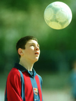
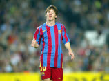
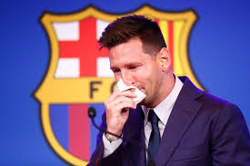

Cronologia da Carreira de Lionel Messi
Infância e Início

- 1987: Nasce em Rosário, Argentina.
- 1995: Começa nas categorias de base do Newell's Old Boys.
- 2000: Vai para o Barcelona, aos 13 anos.
Estreia e Primeiros Títulos

- 2003: Estreia no time principal do Barcelona (amistoso).
- 2004: Estreia oficial contra o Espanyol.
- 2005: Primeiro gol pelo Barça, campeão Mundial Sub-20 e da La Liga.
- 2006: Conquista a Liga dos Campeões (não joga a final).
Era de Ouro (2008–2012)

- 2009: Triplete (Liga, Copa e Champions) e 1ª Bola de Ouro.
- 2009–2012: 4 Bolas de Ouro seguidas. Marca 91 gols em 2012 (recorde).
Desafios e Superação

- 2014: Vice na Copa do Mundo e melhor jogador do torneio.
- 2015: Outro triplete e 5ª Bola de Ouro.
- 2016: Vice na Copa América Centenário. Anuncia aposentadoria e retorna.
Últimos Anos

- 2021: Sai do Barcelona e assina com o PSG.
- 2023: Vai para o Inter Miami e conquista a Leagues Cup.
- 2024: Participa da Copa América nos EUA.
Principais Conquistas

Com Clubes
- 🏆 10x La Liga
- 🏆 7x Copa do Rei
- 🏆 4x Liga dos Campeões
- 🏆 3x Mundial de Clubes
- 🏆 2x Ligue 1 (PSG)
- 🏆 1x Leagues Cup (Inter Miami)
Com a Seleção Argentina

- 🏆 Copa do Mundo (2022)
- 🏆 Copa América (2021)
- 🏆 Finalíssima (2022)
- 🏆 Mundial Sub-20 (2005)
- 🥇 Ouro Olímpico (2008)
Individuais

- 🥇 8x Bola de Ouro
- ⚽ 6x Chuteira de Ouro
- ⭐ Mais de 800 gols na carreira
Trabalho Escolar | © 2025
⬅ Voltar à página inicial